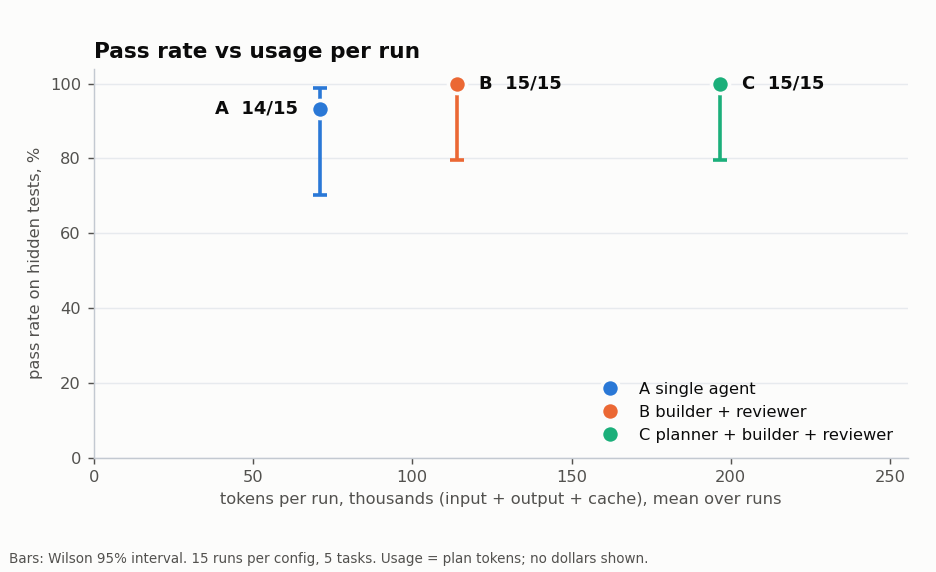
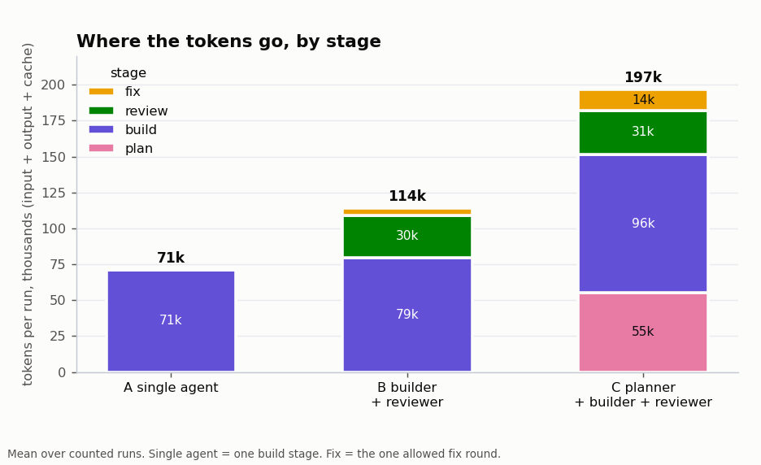

Do teams of AI agents write better code than one agent?
Agent Team Evals runs Claude Code on coding tasks with hidden tests, alone and in teams, and measures two things: how often each setup passes, and how many tokens it uses to get there.
So far: not on clearly specified tasks. A single agent passed 14 of 15 pilot runs; both teams passed 15 of 15, a difference too small to separate from chance. The teams used 1.6x and 2.8x the tokens. A single agent then passed every one of 13 tasks written to be hard, with Sonnet 5.5 and with the smaller Haiku 5.5. The open question is whether teams help when the rules are not handed to the agent, which the newest tasks test.
The three setups
Every setup gets the same model, tools, turn limit and budget. Only the team structure differs.
Single agent
One agent reads the task, writes the code and runs the visible tests.
Builder + reviewer
A builder writes the code; a read-only reviewer checks it against the request. If it asks for changes, the builder gets one fix round.
Planner + builders + reviewer
A read-only planner splits the work into subtasks, builders do them in turn, then the same review and fix round as B.
The tasks
Each task is a small, made-up codebase plus a request. Agents never see the hidden tests that grade the result, and every hidden test traces to a rule the agent could have read. A reference solution proves each task is solvable and that its tests fail on the starting code.
| Tasks | What they are | Hidden tests each |
|---|---|---|
| t01–t05 | Small features, a multi-file CLI, a bug hunt, an ambiguous spec | 10–28 |
| t06–t14 | Larger features, stateful logic, bug hunts, a refactor | 22–66 |
| t15–t18 | Long specs: 25–36 numbered rules, 400–520 lines of reference solution | 88–134 |
| t19–t21 | Under-specified: a short, realistic request; the rules live in the codebase's own docs, config and code | 20–39 |
Pilot: 45 runs
Tasks t01–t05, each config three times, Sonnet 5.5 (sweep 20261029T220931Z).
| Config | Passed | Pass rate (95% CI) | Tokens / run | vs A | Turns / run | Median time |
|---|---|---|---|---|---|---|
| A single agent | 14 / 15 | 93% (70–99%) | 70,947 | 1.00x | 8.7 | 20.6 s |
| B builder + reviewer | 15 / 15 | 100% (80–100%) | 114,189 | 1.61x | 12.5 | 36.5 s |
| C planner + builder + reviewer | 15 / 15 | 100% (80–100%) | 196,607 | 2.77x | 23.3 | 60.8 s |

- The one failure was config A printing
0instead of0.00for an empty group in t03. - The reviewer found real defects. It asked for changes in 4 of 30 team runs, and each fix round turned into a pass, once on the same
0vs0.00bug. - The planner mostly wasn't needed. It chose a single subtask in 12 of 15 runs, so C's extra cost is mostly the planning step.

Harder tasks: can one agent be made to fail?
Before running teams on new tasks, one config-A run per task checks whether there is any room for a team to help.
| Probe | Model | Passed | Tokens | Turns | Agent time |
|---|---|---|---|---|---|
| t06–t14 | Sonnet 5.5 | 9 / 9 | 854,488 | 115 | 351 s |
| t15–t18 | Sonnet 5.5 | 4 / 4 | 1,035,437 | 131 | 376 s |
| t15–t18 + t12 | Haiku 5.5 | 5 / 5 | 3,149,064 | 142 | 863 s |
Sweeps: 20261030T015600Z, T015846Z, T020045Z (t06–t14); 20261030T023845Z, T024137Z, T024402Z (t15–t18); 20261030T044006Z (Haiku). Haiku used about 3x Sonnet's tokens on the same tasks in about the same number of turns, and still needed no reviewer.
Under-specified tasks
When every rule is written in the prompt, a careful agent can check its own work and a reviewer has nothing to add. The newest tasks read like a real request from a colleague instead:
t19 · Refunds
"Add refunds to the payments service; the API is in docs/API.md." The ledger entries, audit log, events, idempotency and error codes are only in the service's conventions and docs.
t20 · New supplier
"Load Corvid's invoice files like the other suppliers." Payment terms, default currency, cancelled lines and error handling live in the importer contract and config.
t21 · Statement bugs
Two customer complaints, symptoms only. Four root causes in shared code; the statement docs define "correct" for every customer.
How it runs
- Each run is headless Claude Code in its own git worktree, with a clean profile: no connectors, plugins or memory leak in.
- The harness, not the model, runs the stages in a fixed order, so the setups differ only in structure.
- Hidden tests are copied in only after every stage has finished. Results are one JSON line per run, with tokens split into input, cache reads, cache writes and output.
- Runs use a Claude subscription. Usage is reported in tokens, turns and time; caps exist to stop runaway loops.
Caveats
- Small samples: the pilot is 5 tasks × 3 runs per setup, and differences under about 15 points of pass rate are not detectable at that size.
- One model family, tasks written for this project, and teams orchestrated in a fixed order rather than by the model.
- Probes are one run per task: they show whether a single agent can fail, not how often.